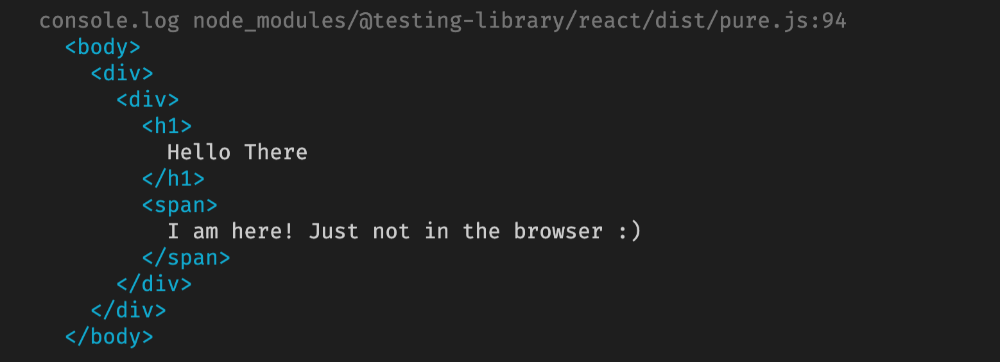
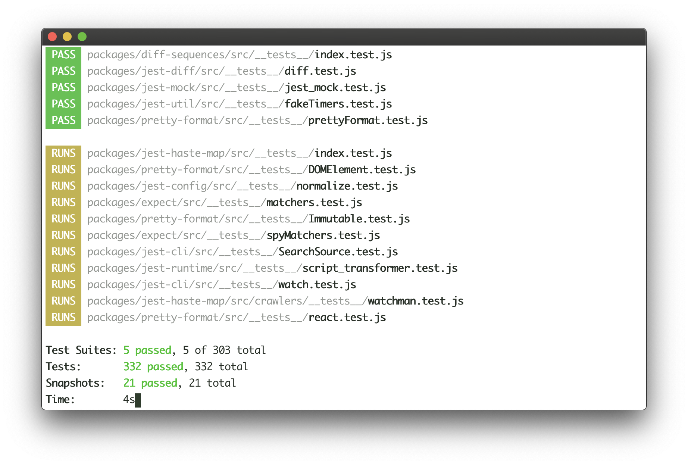
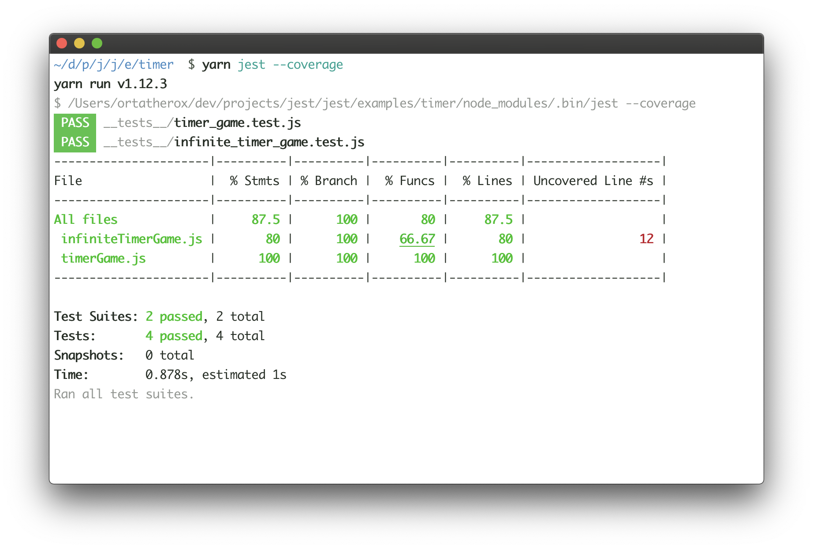
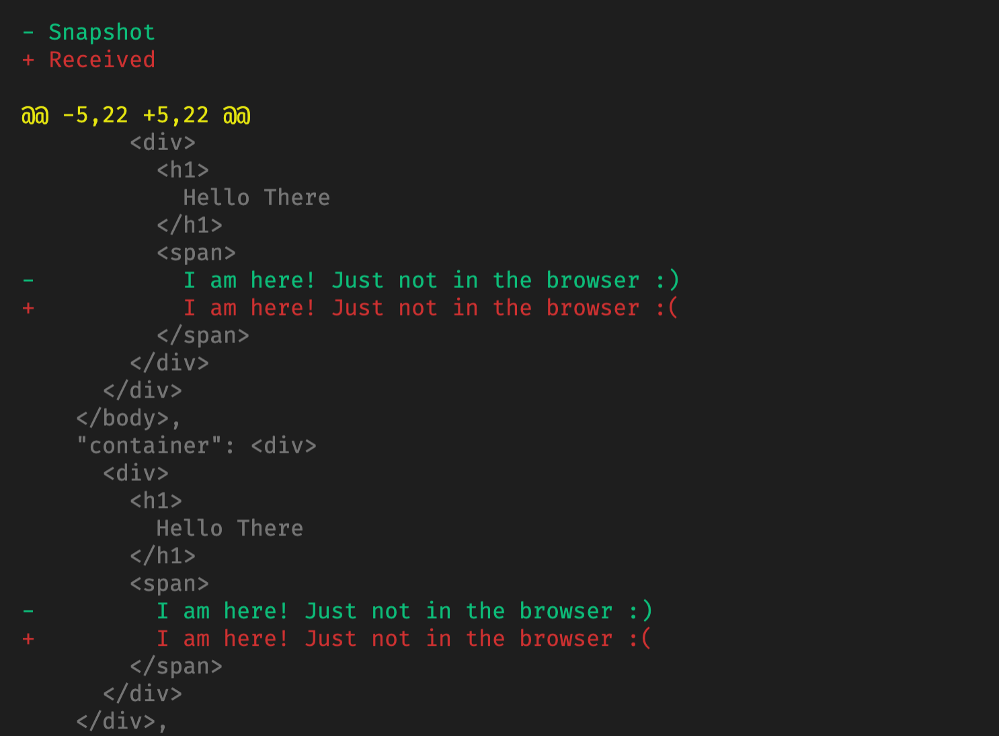

<h3 style="color:#e7ad52">Testing React Components with Jest</h3>
<h4 style="color:#e7ad52">We are going to talk about</h4> - Tools which allow testing the visible - Why Jest? - React Testing Library - Concepts in unit testing - Example component with tests
<h3 style="color:#e7ad52;">How can we test whats in the browser?</h3>
<h5 style="color:#e7ad52">React Components are combination of logic and view</h5> - We need to test the functionality. - We need to test what is rendered. - We need to also test result of interacting with the component.
<h4 style="color:#e7ad52">JSDom</h4> <h6 style="color: rgb(69, 103, 96);"> JSDom is a ligthweight implementation of some portion of browser functionality That is enough to support testing and automation. This means it allow us to: </h6> - Render React Components. - Interact with DOM. - Inspect what is rendered.
<h4 style="color:#e7ad52">JSDom insight</h4> 
<h3 style="color:#e7ad52;">Why Jest?</h3>
<h3 style="color:#ff9d00;">What is Jest?</h3> <h6 style="color: rgb(69, 103, 96);">Jest is a testing framework developed by Facebook. Besides ability to test vanilla JS, it works with React, Angular Vue, etc.</h6>
<h5 style="color:#e7ad52">Advantages of Jest</h5> - Familiar API for testing JS code. - Fast and parallelized. - Comes with create-react-app, easy to configure. - Supports libraries that make testing UI easy. - Provides snapshot testing. - Code coverage and insightful error reporting. - Easy mocking!
<h4 style="color:#e7ad52">Error reporting</h4> <img style="height:500px; width:700px" src="../../presentation_pictures/testing_with_jest/error reporting.png"/>
<h4 style="color:#e7ad52">Running...</h4> 
<h4 style="color:#e7ad52">Test coverage</h4> 
<h3 style="color:#e7ad52;">React Testing Library</h3>
<h3 style="color:#e7ad52;">What is React Testing Library</h3> <h6> React Testing Library provides us with a lot of helpful utilities on top of react-dom that allow to </h6> - Render our components to JSDom. - Read and interact with DOM nodes. - Matchers that allow to make assertions about DOM nodes.
<h3 style="color:#e7ad52;">Why React Testing Library Brilliant</h3> <p style="font-style: italic;">"The more your tests resemble the way your software is used, the more confidence they can give you."</p> <small>React Testing Library Team.</small>
<h3 style="color:#e7ad52;">To achieve this React Testing Library</h3> - Does not care how yout components are designed. - It allows interaction with eventual dom nodes, not component instances. - Exposes API that resembles user interaction with the UI.
<h3 style="color:#e7ad52;">Examples of popular queries</h3> ###### getBy\* and getAllBy\* queries ```js import { render } from '@testing-library/react'; // renders the component to JSDom const wrapper = render(Component); wrapper.getByText(/Submit/i); // Works with RegExp wrapper.getByRole('name-input'); wrapper.getByTestId('date-picker-1'); ``` ###### There are also findBy\* queries which will automatically wait for elements to appear.
<h3 style="color:#e7ad52;">Examples of interacting with UI</h3> ###### fireEvent allows us to perform actions on DOM nodes. ```jsx import { render, fireEvent } from '@testing-library/react'; // renders the component to JSDom const { getByText, getByTestId } = render(Component); fireEvent.click(getByText('Submit')); fireEvent.change( getByTestId('name-input'), { target: { value: 'Some name' } } ) ```
<h3 style="color:#e7ad52;">Useful assesrtions from jest-dom library</h3> - toBeInTheDocument - toHaveTextContent - toBeDisabled - toHaveClass - toContainElement etc...
<h3 style="color: #e7ad52;">Concepts in unit testing</h3>
<h3 style="color: #e7ad52;">Mocking</h3>
<h4 style="color:#e7ad52">What are Mocks?</h4> - A mock is an object or a function that replicates the behaviour of its real counterpart. - The behaviour of a mock is totally controlled. - Mocks provide additional functionality over simple stub functions
<h4 style="color:#e7ad52">Benefits of Mocking</h4> 1. Allows the user to test functionality regardless of the dependencies 2. Test cases cover the funcitonality of individual modules 3. When a test fails. The problem is in the component being tested
```js Math.random = jest.fn(() => 5); test('tests that mocks work', () => { expect(Math.random()).toBe(5); }) ``` ```js import authorization from './auth'; authorization.check = jest.fn(id => 'auth-token'); test('tests that mocks work', () => { const token = authorization.check('somemail@gmail.com'); expect(token).toBe('auth-token'); expect(authorization.check).toHaveBeenCalledWith('somemail@gmail.com'); }) ```
<h3 style="color: #e7ad52;">Snapshot Testing</h3>
<h6 style="color: #e7ad52;">What is Snapshot Testing?</h6> Snapshot testing is the process of taking a picture of rendered component and comparing it with a reference snapshot, which we believe is what the component should look like when it works properly.
<h6 style="color: #e7ad52;">Example in Jest</h6> ```jsx const wrapper = render(Component); expect(wrapper).toMatchSnapshot(); ``` ###### If the test is called the first time, the reference snapshot is created. All subsequent runs will compare against that snapshot.
<h6 style="color: #e7ad52;">Snapshot Difference</h6> 